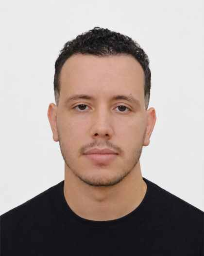

DEC 2025 — MAR 2026
Data Science Intern · Algérie Poste
Designed and developed a centralized intelligent parcel-tracking dashboard, worked with operational datasets, and supported logistics visibility and decision-making.
I build practical solutions at the intersection of artificial intelligence, data science, and software engineering.
AI Engineering student at the National School of Artificial Intelligence (ENSIA), interested in machine learning, intelligent applications, and data-driven products.

I am an AI Engineering student at ENSIA with foundations in algorithms, data structures, and software engineering. My practical interests span machine learning, data science, web and mobile development, and cybersecurity. I enjoy turning technical ideas into useful, well-structured applications.
Python · Java · C++ · JavaScript · PHP · Dart · SQL
React · Django · Flutter · HTML5 · CSS3 · Firebase · Arduino · Git · GitHub · Figma
Machine Learning · Deep Learning · Scikit-learn · Pandas · NumPy · Matplotlib · Data Analysis
MySQL · PostgreSQL · Oracle Database · MongoDB · Firebase Firestore
Designed and developed a centralized intelligent parcel-tracking dashboard, worked with operational datasets, and supported logistics visibility and decision-making.
Explored telecommunications infrastructure and network services, participated in team activities, and became familiar with operational processes and tools.
Supervised machine-learning classification using behavioural data to predict potential health issues associated with study habits. Python · Scikit-learn
AI project focused on planning and optimizing agricultural land production. Python · AI
Centralized operational dashboard for parcel tracking and logistics visibility. Data Science · Algérie Poste
GIS interface for monitoring land-use changes, developed under ASAL supervision. GIS · QGIS
Cybersecurity project detecting DNS tunnelling attacks through real-time network traffic analysis. Cybersecurity
Study and detection of ransomware behaviour and defensive mechanisms. Cybersecurity
Cross-platform real-estate marketplace for buying, selling, and renting properties in Algeria. Flutter · Dart
Book translation management platform developed through a complete software-engineering lifecycle.
Engineering studies in Artificial Intelligence, specialization in Artificial Intelligence and Data Science · Algiers, Algeria.
Interested in AI, data science, software engineering, or meaningful technical collaborations? Feel free to reach out.